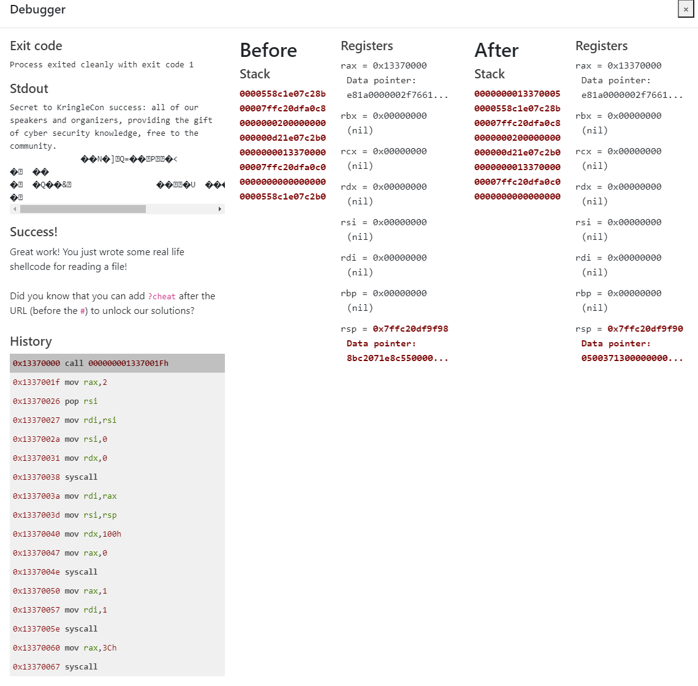

The first two levels are just to show you how the debugger works and everything. If I didn't know better, I'd say Jack Frost stole the design of my website.
But since the Shellcode Primer was created prior to this website and my design had been implemented before reaching this point in the challenge, I would chalk it up to coincidence that the two designs are very similar.
Either that, or the design is simply the easiest and most basic that you can make. Certainly the case with mine.
Level 3 is the first level in which you actually need to input something. Simply add a return statement to complete level 3.
There are eight-ish general pupose 64-bit integer registers on amd64. These are the registers that do that maths.
rbx
rcx
rdx
rdi
rsi
rbp
rsp
For level 4, we just need to set the rdx register to
We need to call
*RTFM - Read The Field Manual or Red Team Field Manual. Not the other thing.
Look at the debugger. Not much to say about this level.
Level 7 focuses on finding and using the return instruction pointer
Level 8 goes through the same steps as level 7, but has you return the string "Hello World!" defined as a string of bytes (db - declare bytes). More on variable declarations in assembly HERE.
This level sets up a syscall. Remember the guide at this website.
Level 10 focuses on opening a file to read it. Make sure to use the guide and put the appropriate arguments into the appropriate registers when setting up your syscall.
Putting it all together in level 11 requires one to RTFM. Putting together everything learned in the previous levels will allow you to complete the last one. The main issues I ran into were the file descriptor, buffer size, and final return statement/syscall. The final image is that of the debugger eventually showing the contents of the

This is the first actually hard challenge
First thing on the list is to go grab that hash_extender tool from Ron Bowes' Github page. On a fresh Kali VM, once you figure out you can't simply use
Next, I'll save you some trouble with tunneling the callback from your shellcode. I didn't realize this part until MUCH MUCH later, but it would be extremely beneficial to do it now and save the headache. From your Kali VM, head over to https://ngrok.com to download their tunneling solution.
Unzip the ngrok.zip and connect your account with
./ngrok authtoken [token in the tutorial]
Then fire up ngrok to create your tunnel from a public ngrok server to your private Kali VM. I'll show you how to do that in a moment.
At this point, you should have done the following:
1. hash_extender tool built and ready to use
2. setup ngrok account and linked it with the token
Take a look at the printer webpage located here. Navigate to the "Firmware Update" page where you'll find an option to download the current firmware. Once you open the firmware it should look something like this.

Decode the big base64-encoded string however you would like. The resulting data has a PK file header typical of a .zip file. Unzip it to get the actual firmware.bin file, which is just an Executable Linux Format (ELF) file that you can run.
The ELF file just prints out a statement to STDOUT that the firmware was updated and nothing more. When you're done using
Use
to create your payload. For LHOST put in the address that ngrok spits out in the previous step when you start up ngrok. The LPORT is there too. This zipped payload is what you will be appending to the end of the original good zip file. Do not forget to
As Xzipit accurately pointed out, and as you've discovered by running
The --append [hex] is the zip file we created containing the chmod'ed payload. The rest of the information is obtained from the original JSON file.
This really long "New string:" is the hex we need to convert FROM HEX and INTO BASE64. The resulting Base64 sting gets put into the original json file along with the new signature generated by the hash_extender program. Save the file.
You have completed your new JSON firmware at this point. You need to listen for a callback once you upload it to the printer!
Just start up a netcat listener with 
I think this is the private key for the algorithm used to create the firmware file:
Found in
There is a secret endpoint on the webserver also. That is located at:
https://printer.kringlecastle.com/secretendpointforuptime
This is what was on there at the time I looked initially. It changes all the time and I have no idea if this is just someone screwing around or an actual hint. But here it is.